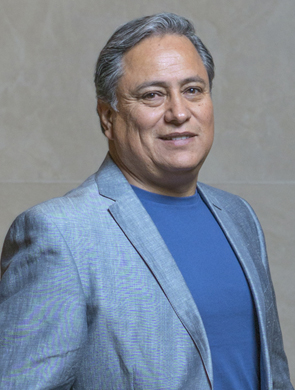

Odont. Héctor Delgado Contreras

Comodidad, estética y funcionalidad
Evitar movimiento de piezas dentales, interferencia en la masticación e, inclusive, problemas en la articulación temporomandibular es el objetivo los implantes dentales
Redacción BS
edicionrevistabs@gmail.com
La boca, en tanto sistema, suele presentar desajustes en la medida que pierde alguna o algunas de sus piezas, es por ello que no debería tomarse a la ligera la falta de algún diente o muela en ningún momento de la vida.
En entrevista con Revista BS, Héctor Delgado Contreras, especialista en implantología dental comentó las posibles consecuencias de la pérdida dental sin tratamiento.
“Cuando un diente perdido no se sustituye, los dientes contiguos se inclinan a ese espacio. Se empiezan a crear interferencias en la masticación, afectando los músculos que entran en acción con esta acción; y, en un futuro, hasta puede tener problemas en su articulación temporomandibular”, detalló el experto.
Para dar solución al problema de la pérdida de alguna pieza dental, comentó, existen tres opciones, dos de ellas cada vez en mayor desuso.
La primera opción son las prótesis removibles, son la alternativa menos aceptada en el presente. Ya que se sostienen por medio de ganchos metálicos, suelen ser poco estéticas.
“Día a día los pacientes aceptan menos esta opción, no quieren nada que tengan que remover de su boca, es la opción menos cómoda para ellos”, apuntó el experto.
Otra alternativa son los puentes fijos, que suelen ser cómodos, estéticos y funcionales, no obstante, presentan el inconveniente de que para su instalación hay que desgastar los dientes contiguos al espacio, que generalmente son piezas dentales saludables. “Hoy en día, los pacientes quieren seguir conservando en buen estado y que no se toquen esas piezas sanas”, refirió.
De uso más reciente, se encuentran los implantes dentales, que pueden ser la alternativa que reúne comodidad, estética y funcionalidad, sin sacrificar piezas en buen estado.
“En el presente, los implantes dentales son la mejor opción para sustituir piezas faltantes, van sumergidos dentro del hueso y son soporte para detener los dientes artificiales”, describió.
Constante perfeccionamiento
Al igual que otras áreas de la odontología, la implantología se ha beneficiado de los avances tecnológicos médicos, haciendo su práctica más cómoda y eficiente.
“Uno de los avances tecnológicos más destacados es el scanner intraoral, con el que se pueden hacer diseños y planeaciones, facilitando así un mejor diagnóstico y con más rapidez y precisión, con gusto informamos que contamos con estas herramientas para su comodidad”, detalló.
Por todos sus beneficios y las herramientas actuales para lograrlo con éxito, atender dientes faltantes es una recomendación fundamental para la salud bucal integral.
“Si perdió un diente, sustitúyalo lo antes posible. Hoy por hoy el implante dental es la mejor opción”, concluyó.